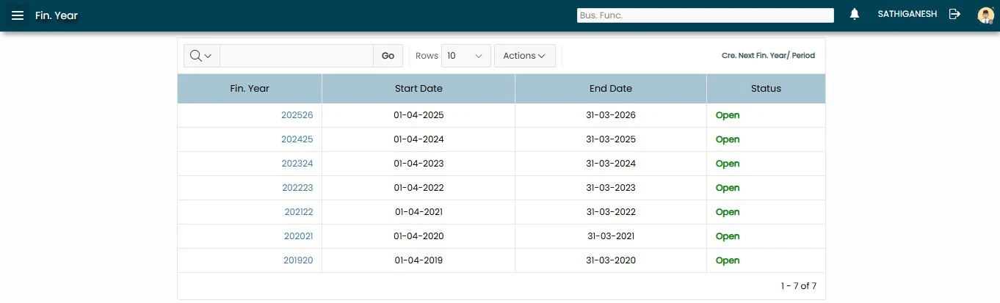
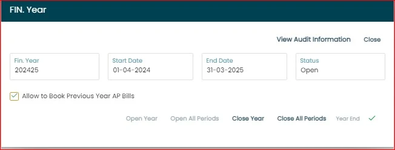

<div data-category="Financials" data-title="Setup - Financial Years" data-updated="December 01, 2025" data-contributors="RoadmapIT" data-breadcrumb="Home,Financials,Setup - Financial Years">
  <div class="page-content">
    <p>A financial year is a 12-month period that is used for accounting and reporting purposes by different entities, such as governments, businesses, and organizations. A financial year can start on April and end on March of next year.</p>
    <p>This screen is used to define Financial Years.</p>
    <h5>Navigation path:</h5>
    <p class="fs-6">Financials\ setup \ Fin. Year/ Periods \ Fin.Years.</p>
    <p>
      This screen is used to create the
      <strong>Next Financial Year.</strong>
    </p>
    
    <ul style="list-style-type: none; align-content: center">
      <li class="mouse-icon">Press the Create Next Fin. Year/Period button to create next Financial Year.</li>
      <li class="mouse-icon">Financial Year has been created message is displayed. Next Financial year will be created with the status as Not Started.</li>
    </ul>
    
    <ul style="list-style-type: none; align-content: center">
      <li class="mouse-icon">Click on the year to open/close or to update the Year End.</li>
      <li class="mouse-icon">Status can be changed as open, closed based on financial period transaction.</li>
      <li class="mouse-icon">If status need to be changed, all the period status should be in open or close on or previous or next year.</li>
      <li class="mouse-icon">Close all periods button will close all the open period in that particular year.</li>
      <li class="mouse-icon">Close Year button will display the open year as closed and it cannot be used for further transaction.</li>
      <li class="mouse-icon">If Allow to Book Pervious Year AP Bill checkbox is enabled, then entries dated from that Closed year will be allowed.</li>
    </ul>
  </div>
</div>
